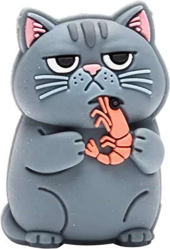
Personality
His unimpressed half-closed eyes became the Charcoal cat-face Jibbitz.
From One Cat to Every Cat
Create footwear inspired by the companion who makes your life softer.
Life Feels Softer Together.
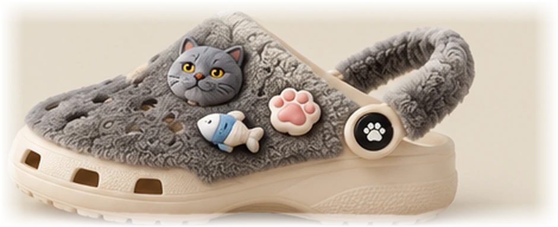
Personalized Jibbitz Fabric upper Heel strap cover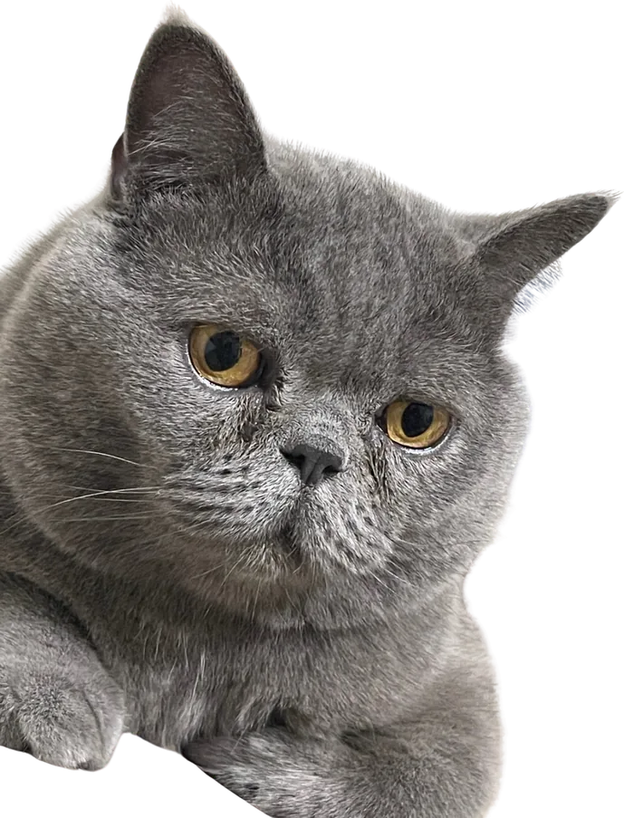
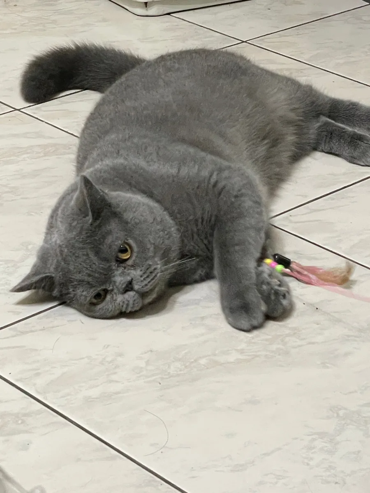
Meet Charcoal
Charcoal is a gray British Shorthair with a dense plush coat, a sleepy side-eye, and strong opinions about shrimp.
His expressions, his long afternoon stretches and his favorite toys shaped the first shoe: a soft clog in his exact shade of gray. Every detail started as something I noticed about him at home, then became a texture, a shape or a small charm.

His unimpressed half-closed eyes became the Charcoal cat-face Jibbitz.
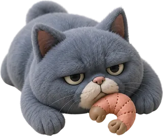
Long naps and lazy sprawls turned into the Sleeping Charcoal charm.
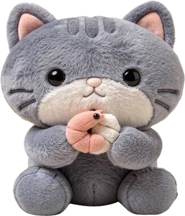
Shrimp, yarn and fish toys: the details owners recognize first.
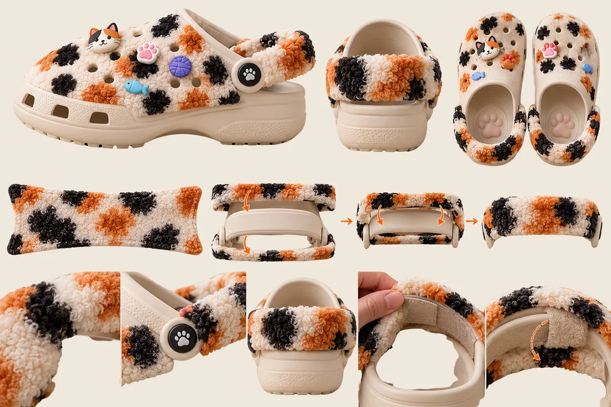
From One Cat to Every Cat
The first design was made only for Charcoal. Survey responses from other cat owners showed they wanted shoes that looked like their own cats. So the single design became a system: swap the fabric upper to match any coat, wrap the heel strap like a tail, and add charms that tell your cat's story.
Personalized design studio · Prototype
Upload a few photos, confirm your cat's features and personality, and customize a pair you can save as a design specification.
How it works
Three removable components sit on the original cream clog: a plush upper, heel strap cover and sculpted Jibbitz. Underneath, the fourth essential feature is a molded paw-shaped outsole tread. The ventilation holes and rotating strap mechanism stay visible and functional.
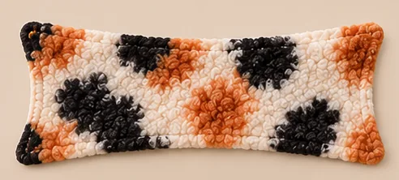
The construction reference shows the removable panel shape. The intended finish is fine, short-pile faux fur, demonstrated in the interactive material preview. It leaves the vent holes open and stops at the cream sole line.
Start with your cat's photo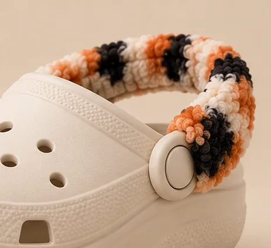
A removable fine-pile cover wraps the existing strap and closes with hook-and-loop. The original construction reference shows its shape; the rotating strap and pivot stay exposed and keep working.
Design the strap cover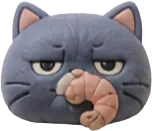
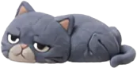
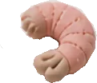
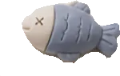
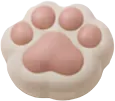
Premium miniature sculpted collectibles that clip into the vent holes. These original Charcoal examples show the intended finish; new cat identities and poses require real image generation, currently disabled.
Get charm suggestionsRaised paw pads form the physical tread on the bottom of the shoe. This original underside feature is separate from the side pivot emblem and decorative charms; the cream clog sole remains intact.
Explore Bottom ViewDesign translation
Each part of the shoe began as something a cat does or looks like.
| Inspiration | Becomes | |
|---|---|---|
| Fur patterns | → | Interchangeable fabric upper |
| Cat tail | → | Removable wraparound heel strap cover |
| Play behavior | → | Personalized Jibbitz |
| Paw prints | → | Paw-shaped outsole, part of every pair |
Emotional connection
This project began with the comfort of having a companion close by. The idea is to carry a little of them with you when you leave the house.
A coat color you would know anywhere. The patch over one eye. The toy that always ends up under the sofa. Personalized colors, patterns and charms let each owner describe their own cat in a way strangers might not notice, and the owner never forgets.
Online survey of 16 current and former cat owners.
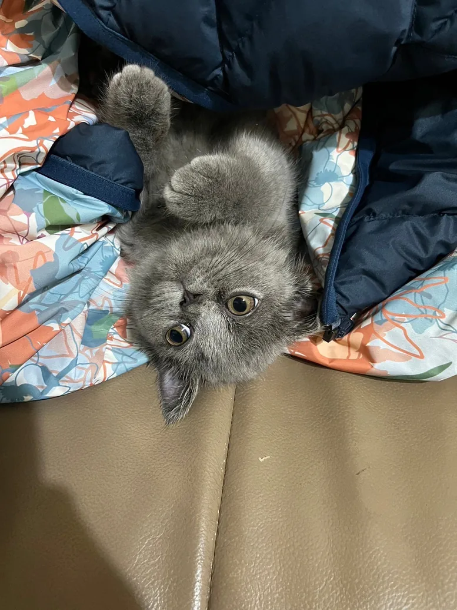
From One Cat to Every Cat
Original concept examples · Charcoal, Mochi, Ginger and Oreo illustrate possible outcomes. They are not generated results for your uploaded cat and do not determine its profile or design.
Every cat is unique.
Every connection is personal.